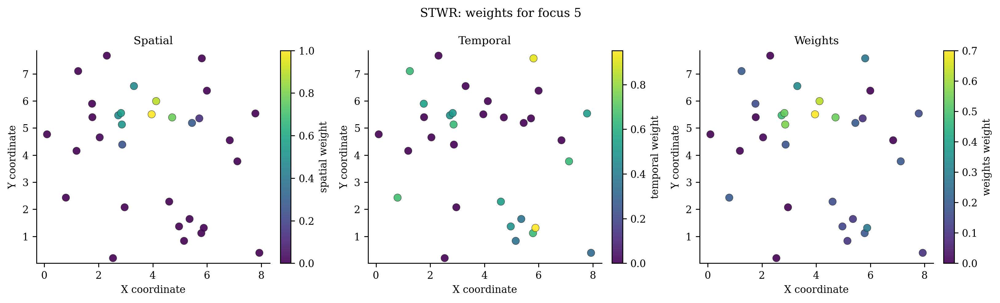

Spatiotemporal Weighted Regression (STWR)¶
Family: Stage-based spatiotemporal regression
Install: pip install -e ".[all]"
Required data: Lists of X, y, and coordinates by stage, plus time intervals
Primary operations: fit, predict, predict_result
New-location capability: Prediction for the current/latest stage using the fitted historical-stage weighting structure.
API reference Runnable source Choose a model
Why this model exists¶
Use STWR when observations are naturally organized into snapshots and the usefulness of history depends on both elapsed time and the observed rate of process change.
One-sentence idea
STWR does not treat time only as clock distance. It allows previous stages to contribute according to spatial proximity, stage intervals, and response-change information, while the historical spatial bandwidth can evolve across stages.
Statistical formulation¶
For a current focal observation and a past-stage observation, STWR constructs a response-change time component and combines it with spatial weights. A conceptual form is
with historical bandwidths adjusted by the stage interval and \(\theta\). The exact implementation follows the stage-ordered, response-change weighting semantics documented by the model API.
How pyGWRx fits the model¶
- Organize data as ordered stage lists rather than a single row-wise time vector.
- Choose how many historical ticks contribute.
- Compute spatial distances from current-stage focal locations to observations in retained stages.
- Construct response-change-aware temporal effects.
- Combine the temporal effect, spatial kernel, alpha, theta, and stage-specific bandwidth evolution.
- Fit local regressions for the latest stage and retain optional weight matrices.
Constructor and important controls¶
STWR(spatial_bandwidth: 'Bandwidth' = 'cv', *, adaptive: 'bool' = True, kernel: 'str' = 'bisquare', alpha: 'SelectionValue' = 0.3, theta: 'SelectionValue' = 0.0, tick_nums: 'Union[int, str, None]' = None, bandwidth_candidates: 'Optional[Sequence[Number]]' = None, alpha_candidates: 'Optional[Sequence[Number]]' = None, theta_candidates: 'Optional[Sequence[Number]]' = None, tick_candidates: 'Optional[Sequence[int]]' = None, fit_intercept: 'bool' = True, distance_metric: 'str' = 'euclidean', sigma2_v1: 'bool' = True, ridge: 'float' = 0.0, store_weights: 'bool' = True, verbose: 'bool' = False) -> 'None'
The API page documents every parameter and fitted attribute. In practice, start by deciding the data contract, neighbourhood definition, selection criterion, and prediction/inference goal before tuning secondary controls.
| Decision | Questions to answer |
|---|---|
| Data | Are rows independent observations, ordered stages, classes, counts, or multivariate features? |
| Distance | Are coordinates projected? Is time or contextual similarity part of the neighbourhood? |
| Bandwidth | Fixed distance or adaptive neighbours? Supplied value or selected criterion? |
| Inference | Are local uncertainty, non-stationarity tests, or only prediction required? |
| Validation | Does the split respect spatial and, where relevant, temporal dependence? |
Complete runnable example¶
The following is the exact maintained example used by the API-coverage checks.
# SPDX-FileCopyrightText: 2026 Jinghao Hu
# SPDX-License-Identifier: MIT
"""Fit STWR from multiple observation snapshots."""
from pygwrx import STWR, STWRPredictionResult
from _common import print_model_result, stwr_stages
X_list, y_list, coords_list, intervals = stwr_stages()
model = STWR(
spatial_bandwidth=10,
adaptive=True,
alpha=0.3,
theta=0.0,
tick_nums=2,
store_weights=True,
).fit(X_list, y_list, coords_list, intervals)
print_model_result(model)
result = model.predict_result(
X_list[-1].iloc[:3],
coords_list[-1].iloc[:3],
reference_y=y_list[-1][:3],
)
assert isinstance(result, STWRPredictionResult)
print(result.to_frame())
Run it from the examples/models directory or through python examples/run_all.py.
Reading the fitted result¶
Main outputs: Latest-stage coefficients and fitted values, selected STWR parameters, stage metadata, optional stored weights, and STWRPredictionResult.
Available high-level methods detected in the current class are: fit(), predict(), predict_result().
A safe inspection sequence is:
# 1. Human-readable overview
print(model.summary()) if hasattr(model, "summary") else None
# 2. Location-indexed table when supported
frame = model.to_frame() if hasattr(model, "to_frame") else None
# 3. Explicitly inspect the model-specific state
print([name for name in vars(model) if name.endswith("_")])
Do not assume that every model exposes the same outputs. Regression, classification, transformation, descriptive-statistics, and inference models have different result semantics.
Diagnostics and interpretation¶
Inspect the contribution of each historical stage, sensitivity to tick_nums, alpha and theta, and whether older stages dominate because of scale or response normalization choices.
The common diagnostics layer can be used where the fitted model provides the required fields:
from pygwrx.diagnostics import diagnostics_frame, local_diagnostic_frame
print(diagnostics_frame([model], labels=["STWR"]))
try:
print(local_diagnostic_frame(model).head())
except (AttributeError, NotImplementedError, ValueError) as exc:
print("This model exposes a different diagnostic contract:", exc)
See Diagnostics and inference for model-aware checks and interpretation rules.
Recommended visual checks¶

The figures are generated from deterministic examples and are illustrative; they are not benchmark claims.
Common mistakes¶
- Passing row-wise time data to a stage-list API.
- Changing stage order or interval semantics.
- Allowing future stages into a forecasting analysis.
- Interpreting stage weights without checking response-value scaling.
What to report in a paper or technical report¶
- Stage definitions and time intervals.
- Historical tick count.
- Spatial bandwidth, alpha, theta, and selection candidates.
- Whether weights were stored and how stage contributions were assessed.
- Forecast or explanatory validation design.